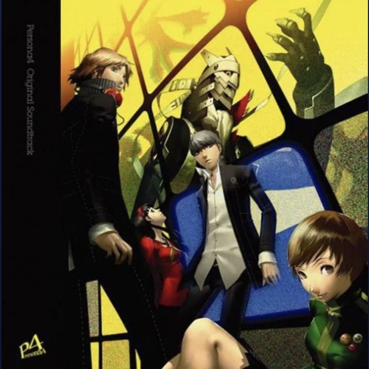
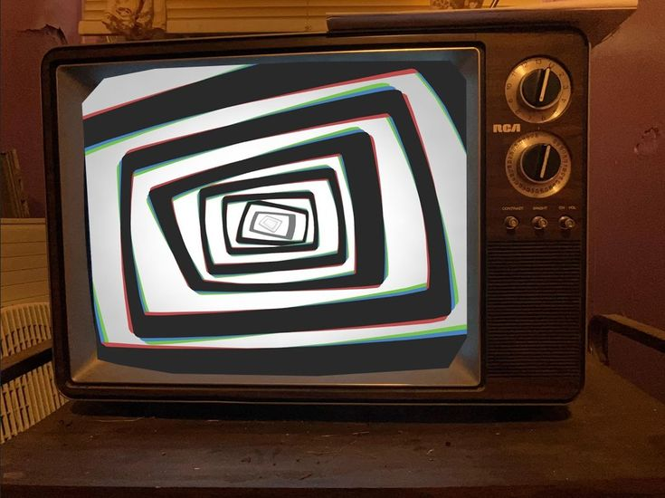
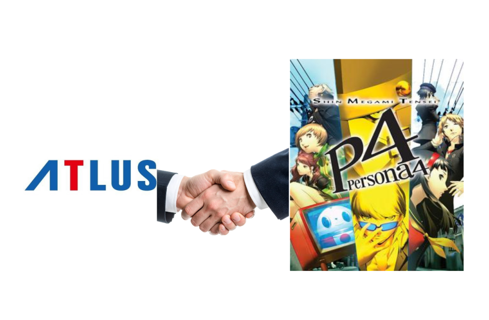

 |
"Pursuing My True Self", de Persona 4 |
Persona 4 (ペルソナ4, Perusona 4), lançado no ocidente como Shin Megami Tensei: Persona 4, é um RPG para PlayStation 2 produzido pela Atlus, lançado originalmente em Julho de 2008. Cronologicamente, é o quinto episódio da série Persona, spin-off de Shin Megami Tensei. O enredo envolve estudantes de cerca de 17 anos e seus conflitos psicológicos típicos, tais como isolamento social, inveja, medo descontrolado, busca pela identidade, vazio interior levando a futilidade, complexo de superioridade e impaciência, assim como a não aceitação do gênero/sexo qual nasceu.
|
Neste trabalho, o protagonista estudante do ensino médio que foi confiado temporariamente à casa de um parente que mora em uma cidade rural desafia o mistério caso de assassinato em série que ocorre na cidade e a existência de outro mundo escondido com seus amigos. Um elemento misterioso que rastreia o mistério do criminoso cuja identidade é desconhecida, uma batalha em um mundo diferente junto de grupo juvenil com atividades do cotidiano, a história se desenrola paralelamente a três elementos. À meia noite em dias chuvosos, pode-se observar acontecimentos no Canal da Meia Noite, a partir de qualquer aparelho de televisão. Aquelas pessoas que aprenderam a usar Personas têm a habilidade de entrar no Canal da Meia Noite através de qualquer televisão diretamente, embora a tela precise ter tamanho suficiente para tal e cada aparelho leve a um local diferente no Canal da Meia Noite. As condições climáticas dentro deste "mundo" são o oposto do clima do mundo real. Há uma neblina persistente no Canal da Meia Noite que pode causar mal estar nos personagens se estes permanecerem por muito tempo lá. Entretanto, após um longo período chuvoso em Inaba, o nevoeiro se acumulará na cidade e desaparecerá do Canal da Meia Noite, fazendo as Sombras residentes mais fortes e mais perigosas a qualquer um que não estiver preparado para estar lá.
|
 |
| A Atlus é uma das desenvolvedoras e distribuidoras de jogos mais icônicas do Japão, famosa por criar RPGs eletrônicos com forte apelo de nicho que, com o tempo, conquistaram o mundo. Fundada em 1986 e hoje parte do grupo Sega, a empresa se destaca por não seguir fórmulas genéricas. Seus jogos costumam misturar temas psicológicos profundos, filosofia, ocultismo e dilemas morais complexos, tudo embalado por direções de arte estilizadas e trilhas sonoras marcantes. Sua franquia de maior peso histórico é Shin Megami Tensei, mas foi um de seus derivados (spin-offs) que transformou a Atlus em um fenômeno global: a série Persona. E, dentro dessa série, Persona 4 ocupa um lugar sagrado na identidade da empresa. |
 |
Lançado em 2008 para o PlayStation 2, a versão original — carinhosamente chamada pelos fãs de Persona 4 Vanilla — chegou no fim do ciclo de vida daquele console. Para a Atlus, esse jogo foi uma virada de chave estética e temática.
O "Vanilla" provou que a Atlus conseguia equilibrar uma jogabilidade de RPG de turnos extremamente técnica com um simulador social viciante. O jogo foi aclamado pela crítica, mas por ter saído tarde na era do PS2, ainda mantinha a Atlus no status de "joia escondida".
Em 2012, a Atlus lançou Persona 4 Golden para o PlayStation Vita. Longe de ser apenas uma remasterização simples, o Golden representa a filosofia de "versão definitiva" que a empresa adotou para seus grandes lançamentos.
O relacionamento da Atlus com o jogo nesta fase expandiu o que já era excelente:
O sucesso estrondoso no PC abriu os olhos da Atlus para o mercado multiplataforma global. A boa recepção de P4G pavimentou o caminho para que os jogos seguintes da desenvolvedora fossem lançados simultaneamente no mundo todo e para todas as plataformas atuais.
(Localização da Empresa Central da ATLUS)